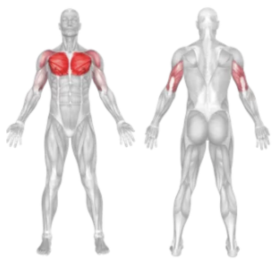

Incline Bench Press
Setup
Adjust a bench to a 30–45° incline angle.
Lie back on the bench with your feet flat on the floor and your back firmly against the pad.
Grip the barbell slightly wider than shoulder-width apart with palms facing forward.
Unrack the bar and hold it directly above your upper chest with arms fully extended.
Keep your shoulder blades retracted and core engaged throughout the movement.
Execution
Lower:
Inhale as you slowly lower the barbell to the upper portion of your chest.
Press:
Exhale and press the barbell back up in a straight line until your arms are fully extended.
Repeat:
Perform the desired number of reps with controlled form.
Tips for Effectiveness
Focus on Upper Chest:
Keep the bar path targeted to the upper chest area, not the mid-chest.
Keep Elbows at 45°:
Avoid flaring elbows out too wide to reduce shoulder strain.
Stable Base:
Keep your feet flat and push through your heels for full-body stability.
Controlled Movement:
Avoid bouncing the bar; maintain slow, controlled reps.
Benefits of Incline Bench Press
Upper Chest Development:
Primarily targets the upper pectorals for balanced chest growth.
Shoulder Strength:
Engages the anterior deltoids for better shoulder development.
Improved Pressing Power:
Helps improve strength for overall bench press performance.
Muscle Definition:
Enhances the shape and definition of the chest muscles.
Muscles Worked in Incline Bench Press

Do you want to change the language of this page?
English
Malayalam
Tamil
Hindi